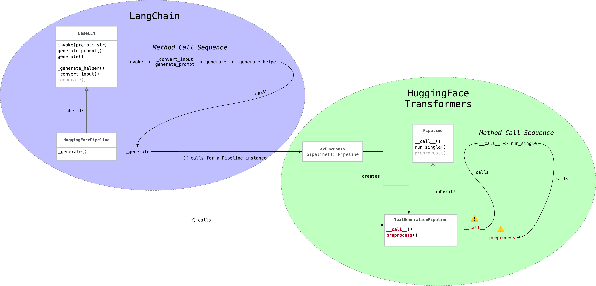

简介
最近测试开源大模型的时候，遇到了一个挺隐蔽的 silent error，值得记录一下。
具体现象是这样：
- 几个 Chat 大模型的表现像是在做基础模型的续写，不像是对话。
- 但他们在 MaaS 或 HuggingFace Space 上的表现却明显是对话。
其中一个模型是阿里开源的 Qwen/Qwen1.5-14B-Chat。在阿里云的灵积 MaaS 上它的表现很符合预期，就是对话。而我们自己跑起来测试的时候就是续写。
项目
我们的项目使用了 LangChain v0.1.16 和 Transformers v4.40.1。代码大致是这样：
from transformers import AutoModelForCausalLM, AutoTokenizer, pipeline
tokenizer = AutoTokenizer.from_pretrained(...)
model = AutoModelForCausalLM.from_pretrained(...)
pipe = pipeline("text-generation", model, tokenizer)
from langchain_core.prompts import ChatPromptTemplate
from langchain_community.llms.huggingface_pipeline import HuggingFacePipeline
prompt = ChatPromptTemplate.from_messages([
('system', 'You’re a chatbot'),
('user', 'Hey')
])
llm = HuggingFacePipeline(pipeline=pipe)
chain = prompt | llm | ...
解决
仔细检查代码和下载的模型，我们并没有发现问题。我的同事国杰参考官方 demo 写了一个测试脚本来执行我们的任务，表现符合预期，是对话。
于是就在我们的项目里自定义了一个CustomPromptTemplate，替换掉 LangChain 的ChatPromptTemplate，大致是：
from langchain_core.prompts import StringPromptTemplate
from transformers import PreTrainedTokenizer, PreTrainedTokenizerFast
class CustomPromptTemplate(StringPromptTemplate):
tokenizer: PreTrainedTokenizer | PreTrainedTokenizerFast
def format(self, **kwargs):
messages = [
{"role": "system", "content": "You’re a chatbot"},
{"role": "user", "content": "Hey"}
]
return self.tokenizer.apply_chat_template(
messages,
tokenize=False,
add_generation_prompt=True
)
tokenizer = AutoTokenizer.from_pretrained(...)
...
prompt = CustomPromptTemplate(tokenizer)
chain = prompt | llm | ...
再测试，发现我们的项目里开源大模型的输出也是对话了。
到此，问题已经解决了。我对其中的症结产生了兴趣，也想排查是否会引入其他潜在问题。所以顺着解决方案继续分析。
分析
首先来看 LangChain 和 Transformers 搭配使用时的关键调用链路：

关键点是右下角的__call__和preprocess两个方法，来看看 Transformers 的关键代码（完整代码见 text_generation.py）：
class TextGenerationPipeline(Pipeline):
def __call__(self, text_inputs, **kwargs):
if isinstance(text_inputs, (list, tuple)) and isinstance(text_inputs[0], (list, tuple, dict)):
# We have one or more prompts in list-of-dicts format, so this is chat mode
if isinstance(text_inputs[0], dict):
return super().__call__(Chat(text_inputs), **kwargs)
else:
chats = [Chat(chat) for chat in text_inputs] # 🐈 🐈 🐈
return super().__call__(chats, **kwargs)
else:
return super().__call__(text_inputs, **kwargs)
def preprocess(
self,
prompt_text,
...
):
if isinstance(prompt_text, Chat):
inputs = self.tokenizer.apply_chat_template(
prompt_text.messages,
...
)
else:
inputs = self.tokenizer(
prefix + prompt_text,
...
)
...
从__call__的代码中可以看出，参数text_inputs必须符合一些类型要求，才会被 Transformers 当作对话处理，后续执行到preprocess方法时才会调用tokenizer.apply_chat_template。
什么类型才符合要求呢？Transformers 最常规的用法就符合，比如：
messages = [
{"role": "system", "content": "You’re a chatbot"},
{"role": "user", "content": "Hey"}
]
它的类型是list[dict]。
而 LangChain 提供的 text_inputs 不符合这些要求，就走到了 else 分支，后续在preprocess方法里没有调用tokenizer.apply_chat_template，被当作非对话处理了。
具体来说是这样，以 LangChain 常见的 prompt template 用法为例：
prompt = ChatPromptTemplate.from_messages([
('system', 'You’re a chatbot'),
('user', 'Hey')
])
LangChain 提供给 Transformers 的 text_inputs 是这样的：
[
"System: \nYou’re a chatbot\n\nHuman:Hey"
]
它的类型是list[str]。
到这里，分析结束。我们有两种解决方案：
- 在调用 Transformers 之前对 prompt 调用
tokenizer.apply_chat_template。这也是前述我同事国杰采用的方法。 - 提供符合 Transformers 需要的 prompt 格式，比如上面提到的
list[dict]，由 Transformers 在其内部调用tokenizer.apply_chat_template。
如果你对为什么tokenizer.apply_chat_template这么关键感到好奇，可以阅读这两篇文章：